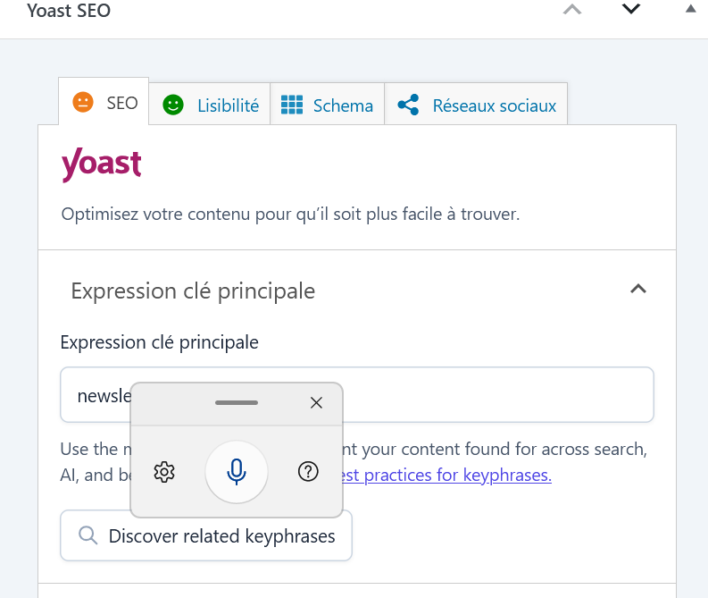

Stage — Développement d'un site Lespros.website
Improve Data — Nanterre
Présentation de l'expérience
Durant cette deuxième période de stage chez Improve Data, j’ai travaillé sur un nouveau projet web : Les Pros.website. J’ai participé au développement et à la personnalisation des différentes pages du projet avec WordPress. Le site était encore en cours de développement à la fin de mon stage et n’avait pas encore été déployé en ligne.
Mes missions
- Création et modification de pages avec WordPress et Gutenberg.
- Organisation des différentes sections du projet.
- Intégration et personnalisation des contenus.
- Mise en forme des textes, images et éléments visuels.
- Corrections et ajustements des différentes pages.
- Vérification du rendu du projet pendant son développement.
Réalisations
Quelques exemples de travaux réalisés pendant le développement du projet.




Technologies & outils
Compétences développées
Cette deuxième expérience m’a permis de renforcer mes compétences en développement infprmatique avec le CMS Wordpress, en mise en page et en gestion de contenus, tout en découvrant le développement d’un nouveau projet avec WordPress.